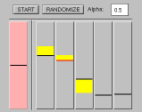

First demo - The simplest case
Go to the first demonstration.
Second demo - Visualizing a data set

Go to the second demonstration.
The demonstrations require a Java-capable browser such as Netscape. If you have problems with the demos, see the notes at the end of the page.
First demo - The simplest case | |
|
 |
The first demo shows the SOM algorithm in a nutshell. When the
self-organizing map algorithm controls a row of sliders, they
gradually become ordered when random inputs are presented. Go to the first demonstration.
|
Second demo - Visualizing a data set | |
|
|
The second demonstration is more complex. A two-dimensional map is
taught with data from four classes. As the result the classes will
occupy separate areas on the map. Classes and their proportions as
well as other parameters may be set by the user allowing a wide range of
experiments. Go to the second demonstration.
|
The demos have been tested with the JDK's appletviewer on SGI and Netscape 2.0 on several UNIX platforms (SGI, HPUX, DEC OSF/1, Linux). We've tried them once with Netscape 2.0 for W95 and the display was completely messed up but it might have been an isolated incident. Anyway, We'd like to hear how they work for you.
We have had some problems with the loading of the applets. The demos seem to work best if you first go to the first demo and from there directly to the second using the link provided at the end of the page. If you come from the first demo back to this page (with the BACK-button) and then go to the second demo, things may get stuck. Stopping, reloading, visiting other pages, etc. might finally get the thing loaded.